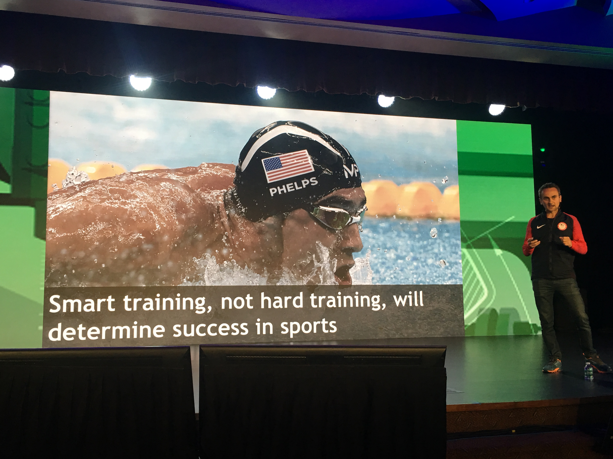

Today was my first day at AWE(Augmented World Expo), and other than waking up much earlier than usual (around 730), it was a pretty great day. On a complete side note, I learned to navigate the Caltrain today, which was nice. Especially since it’s a great way to get to the San Jose, South Bay area without having to deal with the rush hour traffic.
In this blog, I am going to give my thoughts around my first big conference experience. I’ll divide the post by the speakers that I saw, in the order that I saw them.
NVIDIA
The first speaker that I saw was Zvi Greenstein from NVIDIA. One of the things that stood out from their presentation was their HoloDeck demo. The demo was a visualization of a car in incredibly beautiful VR world. You are able to see the hardware and materials of the car through AR, and are able to feel like you are driving this luxury car. What impressed me from this speaker was the aesthetic beauty of the image quality. They are in the forefront of visual computing as a company, and their hardware specs highlighted this. The immense picture quality was created by 50 million polygons.
HTC Vive
One interesting point that Richard Steiber from HTC Vive brought up was the spectrum of performance in current AR/VR headsets. The highest performance headsets are the ones that are wired and PC powered, while the worst ones are the mobile cardboard applications. Later on, they demoed a game in which a player has objects flying at them at a high speeds, almost similar to a tornado. The player is connected to the VIVE, and is playing in virtual reality, and can actually kick and hit the flying objects to break them. That was incredibly impressive to me, as the physics and objects looked very smooth and realistic, and it seemed like a very fun application of VR. The coolest concept from this talk was the idea that Artificial Intelligence could be trained in Virtual Reality. Imagine if instead of letting those self-driving cars roam around the streets to gather data, you could simply let the cars gather data in Virtual Reality. This would be extremely helpful. Not only would the cars be free from the possibility of harming others in car accidents, but also the data could be gathered at a much higher volume in Virtual Reality since the cars would not have to be physically built.
ODG
Keith Boesky from ODG had an extremely funny and inspiring presentation today. His product, the R-8 glasses, are moving to the future of headsets in that they are smaller, sleeker, and less expensive. The R-8 could pass for ordinary prescription glasses from a distance, which is a huge accomplishment for the company. The R-8 glasses have had the most success in the construction industry, where a worker could have up to hundreds of different instructions that he/she would have to perform. With the glasses, the work could be performed at about 34% faster than without the glasses, since the user would not have to keep flipping through the manual to look for instructions. In this way, the R-8 product is streamlining industry AR. Another cool example of AR in industry demonstrated by Keith was the Augmented Reality manual for Hyundai. The manual let's the user see the different parts of the engine in a colorful, 3D, and interactive environment. Another cool thing about these glasses is that they are THX certified, so they are held to very high visual standards. One thing that I am extremely interested in demoing tomorrow at the exhibition hall is the Citrex “SmartOffice” deal that ODG has which enables you to view your desktop with your R8 glasses. That means that instead of reading and checking your emails on your computer, you can simply have the interface in front of you, in Augmented Reality, thanks to the glasses. I'm interested to see just how obstructive this view will be. The videos below highlight the durability of the R-9's, which are designed for the construction industry, and have similar specs to the R-8's. The major difference between the two models are that the R-8 are much more slick, small, and light, while the R-9 are bulky and built to withstand almost any type of damage.
Unity
Tony Parisi from Unity had a very nonchalant and cool tone to his presentation. He went into the numbers of how many developers use Unity and how important it is to create immersive environments. He basically said that he more immersive the technology the more useful that computers will be in the future. Video games are pioneering this immersive technology, and they are paving the way for 3D technology that can be applied to any industry. Tango, which is a AR platform made by Google, is slowly becoming available on different smartphones, which will allow developers to put their AR apps on an app store. This will open the doors to AR apps and start a whole new domain of development. The take away from this talk was that people need 3D interfaces, and that software is heading toward that direction through AR.
USA Olympic Team
Mounir Zok’s talk was one that really struck close to home for me, since it brought me back to my days on the tennis court back in San Diego. Mounir went into the numbers of sports. In a lot of sports, the difference between medal and no medal can be less than 0.01%. Especially in events like the 100M dash, which lasts less than 10 seconds for the elite athletes. The USA Olympic team made a 20% increase in medals from the London 2012 games to the 2016 Rio games, which Mounir accredited to the use of technology. While I don’t think that the full 20% increase was hugely in part to technology, I do agree that this innovation in “smart training” did go a long way to keep the Americans taking home gold. One of the most interesting parts of the talk had to do with the most famous American Olympiad, Micheal Phelps. The American team tracked his sleep for 1000 days to help customize his training plan each and every day. Contrary to conventional training, in which you make a training plan and execute it over a long period of time, they come up with a new training plan each and every day, depending on the sleep. I would guess if there is a night in which Phelps did not get much sleep, or is extremely jet-lagged, he would not train at all. Furthermore, on days in which he got above average sleep, he would be able to push the limits and try to train at 100%. This was just me speculating, from my days playing collegiate level tennis. The last application that I think is extremely cool has to do with sports in which training is simply not possible for long periods of time. For example, sports like bobsled are simply not possible to practice for long periods of time daily. So how would an athlete get a competitive advantage? Well, what Mounir argued is that through AR training, the bobsled team would be able to learn and develop their skills in navigating the course, without physically being on the sled.

Conclusion
My final thoughts from the first day are that it’s only a matter time before AR and VR are integrated into mainstream culture. Not gaming culture, but mainstream culture. Sure Pokemon Go has popularized AR in the gaming world, but I am talking about an app that is as revolutionary as Google Maps. Something that everyone will use. I really think that that next big app will be coming within the next year and a half. I’m very convinced. There are still a lot of problems with execution in VR and AR, such as AR images being blurry or vibrating, but I do think that as the technology matures, these small execution issues will not be a problem. All in all, I am extremely excited to demo the R-8 glasses from OCD, the HTC Vive games, and Microsoft HoloLens tomorrow, and to keep learning more about this innovative and immersive new technology.